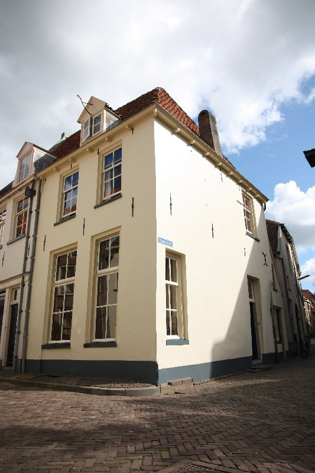
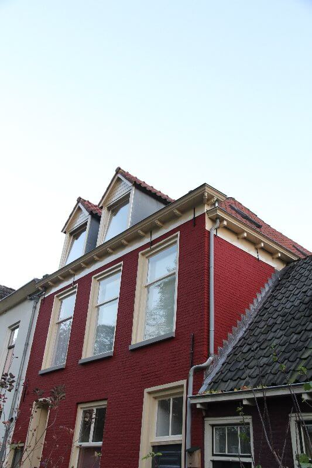
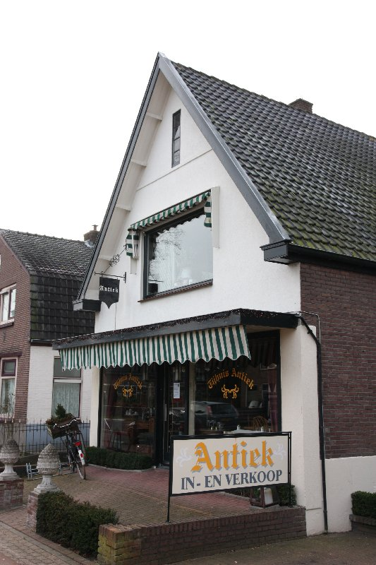
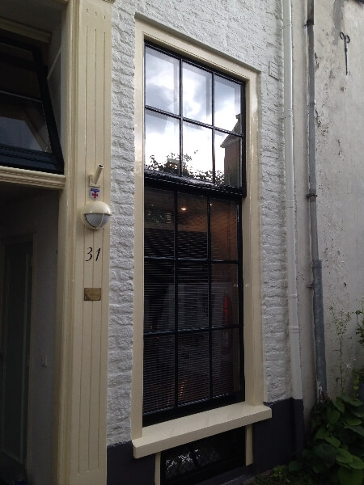
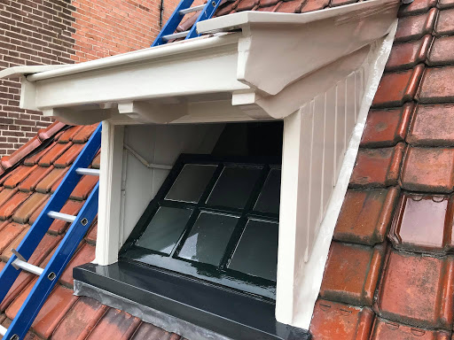

Heukestraat 58, Zutphen
Schilder in Zutphen en omgeving
Mooi geschilderd. En dat blijft het.
Binnen en buiten, voor particulieren en bedrijven. Bjorn denkt mee, werkt netjes en gebruikt alleen goede verf. Zo ziet uw schilderwerk er over jaren nog goed uit.
5,0 op Google, uit 7 reviews
Werk in de buurt
Het bewijs staat gewoon in de straat.
Een paar panden waar Bjorn de kwast over haalde, van oude stadshuizen tot een winkelpand in Voorst. Komt u er langs, kijk dan gerust even goed.




Ook aan het werk geweest op
- Bronsbergen 132, Zutphen
- Hortensiastraat, Zelhem
- Rhienderinklaan 27, Warnsveld
- Leestensepad, Leesten
Over Bjorn
Een vakman die u graag over de vloer heeft.
Sinds 2012 schildert Schildersbedrijf Bjorn Menting voor particulieren en bedrijven in Zutphen en omgeving. Van één kozijn tot het houtwerk in een heel huis.
Bjorn gaat voor een langdurige relatie met zijn klanten. Dat lukt alleen met goed werk: hij gebruikt uitsluitend kwaliteitsproducten en blijft bij met wat er nieuw is in het vak. Het resultaat ziet u niet alleen bij de oplevering, maar vooral een paar jaar later.
- Actief sinds
- 2012
- Google-score
- 5,0 uit 7 reviews
- Voor
- Particulier en zakelijk
- Vanuit
- Weerdslag, Zutphen
Wat Bjorn voor u kan doen
Staat uw klus er niet tussen? Bel gewoon even, dan hoort u snel of het kan.
06 28 73 65 90Schilderwerk binnen
Wanden, plafonds, deuren en houtwerk. Netjes afgeplakt, zodat u er zo min mogelijk last van heeft.
Schilderwerk buiten
Gevels, boeidelen en buitenhoutwerk, met verf die tegen het Nederlandse weer kan.
Kozijnen
Ramen, deuren en kozijnen goed voorbereid en strak in de verf. Ook voor oude stadspanden.
Houtrot reparatie
Rot hout eruit, gezond hout terug en daarna weer netjes afgelakt.
Onderhoud
Op tijd bijwerken houdt uw schilderwerk mooi en voorkomt grotere reparaties later.
Kleuradvies
Twijfelt u tussen twee tinten? Bjorn denkt mee over wat past bij uw huis.
Glas plaatsen
Nieuw glas in uw kozijnen, handig te combineren met het schilderwerk.
Glasvliesbehang
Stevige, strakke wanden en plafonds die daarna in elke kleur te schilderen zijn.
Wat klanten zeggen
5,0
Gemiddeld uit 7 reviews op Google.
"Heeft bij ons in het hele huis het houtwerk van binnen geschilderd. Veel werk en de manier waarop Bjorn dat doet is erg prettig. Los van dat hij een vakman is en erg netjes werkt, stemt hij alles goed af en is het ook een zeer prettig persoon om in huis te hebben. Toch belangrijk bij een grote klus binnen. Bij een volg…"
"Onze gestucte nieuwbouwwoning is door dit schildersbedrijf tot in de puntjes voorzien van prachtig schilderwerk. Niet alleen zijn opgeleverde werk is zeker aan te raden, maar ook de manier waarop hij communiceerde met ons als klant. Hij denkt mee over de mogelijkheden, is zeer flexibel en hield ons ook tijdens de werkz…"
"Prachtig buiten schilderwerk,fijn contact,heel tevreden met dit bedrijf.Dankjewel Björn!!"
"Beste schilder uit zutphen en omgeving! Doet niet moeilijk bij veranderingen en is makkelijk en leuk in de omgang!"
"Zeer professioneel en mooi resultaat"
Even bellen is het snelst.
Vertel kort wat er geschilderd moet worden. Bjorn denkt vrijblijvend met u mee.
06 28 73 65 90- Adres
- Weerdslag 114
7206 BW Zutphen